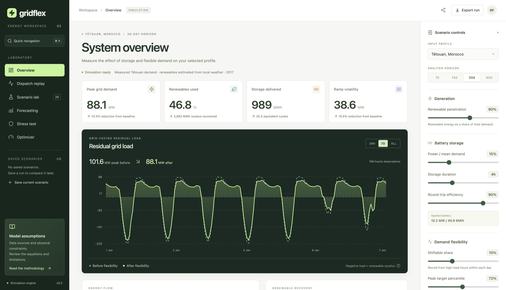
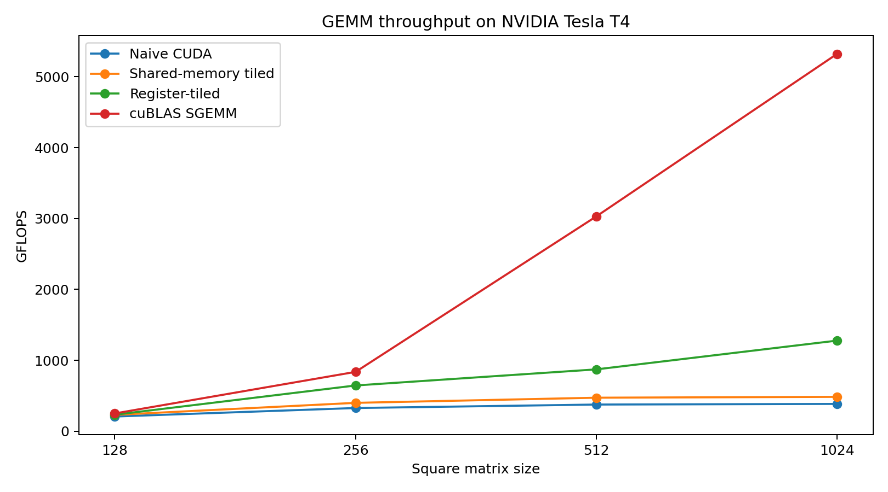

Hackathon project · Hong Kong AI Summit
I conceived Sourced and led a five-person team in the Startup Track at BUILD ACROSS, 3–4 October 2026, at HKUST Business School Central. Missing facts stay unknown.
Sichuan University · Class of 2027
I design services, interfaces, and data systems in Chengdu, then check whether the decisions hold. I’m looking for graduate software engineering roles in 2027.
Sourced is a hackathon project. SkyQuery is an internship. The other four are personal projects.
Hackathon project · Hong Kong AI Summit
I conceived Sourced and led a five-person team in the Startup Track at BUILD ACROSS, 3–4 October 2026, at HKUST Business School Central. Missing facts stay unknown.
Personal project · live application
Roles checked in the API
Insurance claims, file-signature checks, and an audit trail. The October deployment uses PostgreSQL.
React client and a layered ASP.NET Core API. Status permissions are enforced on the server, with unit, integration, and browser tests plus a written security assessment.

An energy workspace for testing storage and flexible demand. The interface does not own the physics. 71.731 ms to 2.246 ms on the recorded 60-day shift and battery pipeline, same numeric output in that case. Not whole-app latency.
Personal project · synthetic transactions
891,772
Atomic transfers, idempotent retries, and analytics. Not a live bank.
FastAPI and PostgreSQL. Tests cover retries, conflicting payloads, concurrency, and rollback. Uplift is reported separately from incentive payoff.

Register-tiled GEMM at 1,278.508 GFLOPS: 3.32× the naïve kernel and 24.0% of cuBLAS at 1024×1024. A warp-shuffle Softmax was slower than register caching, and that result stayed documented.
Internship project · March–April 2026
Chengdu Suncaper
Data & AI Engineering Intern. Backend and data on a two-person team. The published query service uses SQLite.
Internship project · Chengdu Suncaper
Fourteen stories across three sprints: PySpark analysis, data preparation, and a FastAPI text-to-SQL prototype. The 15 million records belong to the analytics project, not a verified SQLite row count.
Practice
GridFlex’s scientific engine is independent of React. Aegis checks status permissions in the API. Sourced keeps eligibility in an adapter, so the interface cannot quietly turn a missing fact into a pass.
The GridFlex figure is two engine operations, not page load. The CUDA figure is a T4 median of 20 runs, next to cuBLAS, including a Softmax experiment that was slower and stayed documented.
Neobank data is synthetic. Sourced demo listings are fictional. SkyQuery’s conversational service executes against SQLite, which is not the same thing as the 15-million-row analysis.
Python, C#, TypeScript, SQL, C++ / CUDA
FastAPI, ASP.NET Core, React, PostgreSQL
Docker, GitHub Actions, Git, PySpark, Hive, HDFS
Study, one internship, and a two-day hackathon build.
Expected 2027
Software Engineering. Final year, based in Chengdu.
March – April 2026
Chengdu Suncaper Data Co., Ltd. Two-person SkyQuery team. I owned backend and data engineering: PySpark analysis, data preparation, and the FastAPI query service. Fourteen stories across three sprints.
3–4 October 2026
Startup Track at HKUST Business School Central. I conceived Sourced and led a five-person team across engineering, AI, data, and finance. The hackathon was organized by Erasmus AI Society and MAIN Maastricht AI & Tech Network, and hosted by HKUST MBA and the HKUST Entrepreneurship Center.
Backend, full-stack, data, and software engineering. The CV, GitHub, and LinkedIn are the fastest way in.